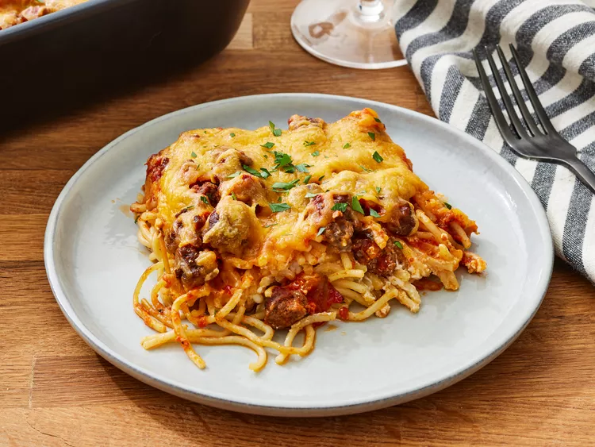

Million dollar spagetti
This recipe is super simple to follow and has 10 easy steps.
Just adding this for more content I have to admit that spaghetti is my favorite food.
Ingredients
- 1 - 8oz package of spaghetti
- 1 - pound of lean ground beef
- 1 - 16 ounce jar of spaghetti sauce
- 1/2 - cup butter, sliced - divided
- 1 - 8oz container of cottage cheese
- 1 - 8oz package of cream cheese, softened
- 3/4 - cup sour cream
- 1 - 8oz package of shredded Cheddar Cheese
Steps
- Gather all the ingredients and preheat the oven to 350 degrees F (175 degrees C).
- Bring a large pot of lightly salted water to a boil. Cook spaghetti in boiling water
until cooked through but firm to the bite, about 9 to 12 minutes. Drain.
- While the pasta is cooking, heat a large skillet over medium-high heat. Cook and stir beef in the hot skillet until browned and crumbly, 5 to 7 minutes; drain and discard grease.
- Transfer to a bowl and mix in spaghetti sauce.
- Place 1/2 of the butter slices into the bottom of a 9x13-inch casserole dish. Spread 1/2 of the spaghetti into the dish.
- Mix cottage cheese, cream cheese, and sour cream together in a bowl; spread mixture over spaghetti.
- Cover with remaining spaghetti and top with remaining slices of butter.
- Pour the ground beef mixture over spaghetti and spread in an even layer.
- Bake in the preheated oven for 30 minutes. Spread Cheddar cheese on top and continue baking until cheese has melted and is lightly browned, about 15 minutes more.
- Enjoy!